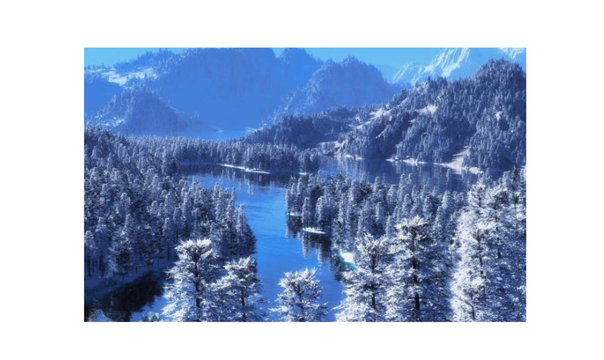
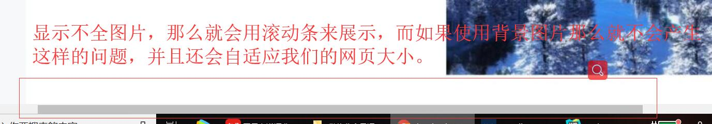

原文连接:https://www.cnblogs.com/ruigege0000/p/11432792.html
一、背景定位
同一个标签可以同时设置背景颜色和背景图片，如果颜色和图片同时存在，那么图片会覆盖颜色
1.在CSS中有一个叫做background-position：属性，就是专门用来控制背景图片的位置
2.格式：background-position:值1 值2；
值1的取值范围：left center right
值1代表背景图片的水平位置
值2的取值范围：top center bottom
值2代表背景图片的垂直位置
值1和值2也可以设置像素值，来分别表示距离最左边和最上边的像素值(注意可以接受负值，也就是左上角就是坐标的原点，图片的左上角就是坐标值的大小)，记住一定要带单位。默认值为：left top
例子：
<style>
.box{
height: 1000px;
width: 1000px;
background-image: url("image/snow.jpg");
background-repeat: no-repeat;
background-position: center center;
}
</style>
</head>
<body>
<div class="box">
</div>

3.使用方式：
我们使用背景图片，而不是使用img标签，这是因为，当我们使用img标签的时候，如果图片很大那么下面就会有滚动条，但是这种网页是很垃圾的，因为展示出来首页，就是让大家看的，加一个滚动条很不舒服。那我们用小图片不就得了，这其实也不行，因为我们每个人的屏幕分辨率大小都不同，因此需要一张较大的背景图片来解决上面的问题。

二、源码：
d97_background_location.html
地址:
https://github.com/ruigege66/HTML_learning/blob/master/d97_background_location.htm
2.CSDN：https://blog.csdn.net/weixin_44630050（心悦君兮君不知-睿）
3.博客园：https://www.cnblogs.com/ruigege0000/
4.欢迎关注微信公众号：傅里叶变换，后台回复“礼包”获取Java大数据学习视频礼